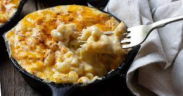

Mac N' Cheese

Description:
a rich and creamy dish consisting of macaroni pasta mixed with a cheesy sauce
Ingredients:
- 1 lb. dried elbow pasta
- 1/2 cup unsalted butter
- 1/2 cup all purpose flour
- 1 1/2 cups whole milk
- 2 1/2 cups half and half
- 4 cups shredded medium sharp cheddar cheese divided (measured after shredding)
- 2 cups shredded Gruyere cheese divided (measured after shredding)
- 1/2 Tbsp. salt
- 1/2 tsp. black pepper
- 1/4 tsp. paprika
Steps:
- Boil the pasta, drain.
- Make the cheese sauce by combining a fat (butter), and starch (flour), then whisking in the milk products.
- Cook the sauce until it’s nice and thick.
- Add in shredded cheeses, stir well.
- Combine cheese sauce with cooked pasta.
- Transfer half of the mac and cheese to a baking dish, sprinkle with more shredded cheese.
- Top with the rest of the mac and cheese, top with more shredded cheese.